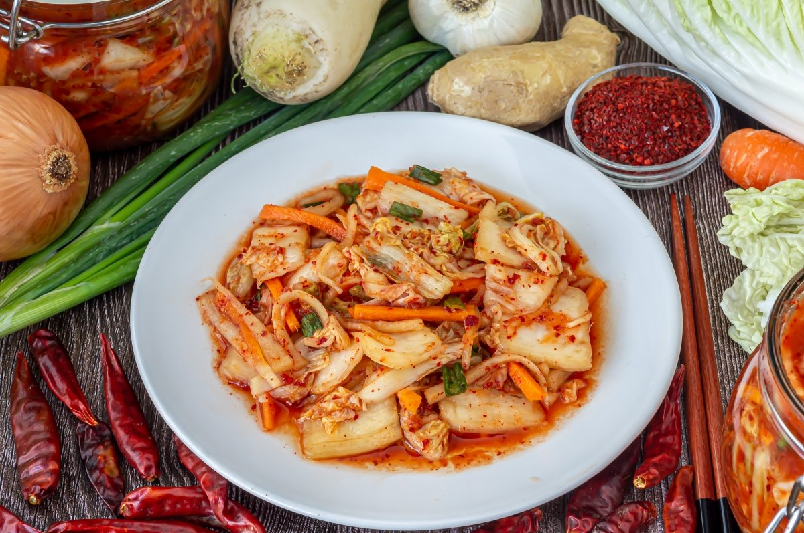

Kimchi recipe

"Kimchi, an iconic Korean dish, is a delicious and spicy variety of pickle that is resplendent with a perfect balance of bold and lively flavors. This fermented dish is composed primarily of Napa cabbage and radishes, marinated in a blend of seasonings including garlic, ginger, chili paste and other aromatics. The result is an explosion of flavors, from the crisp freshness of the vegetables to the spiciness and umami depth of the fermented seasonings."
Ingredients
- Napa cabbage
- Daikon radishes
- Garlic
- Fresh ginger
- Gochugaru (Korean red pepper flakes)
- Fish sauce
- Sugar
- Salt
Steps to make Lasagna
- Preparation of Ingredients:
- Finely chop Napa cabbage and daikon radishes.
- Grate or finely chop garlic and fresh ginger.
- Seasoning Mixture:
- In a large bowl, mix gochugaru, fish sauce, sugar, and salt. Adjust quantities to taste and spice preference.
- Marination:
- Add the chopped vegetables to the seasoning mixture. Ensure all vegetables are well coated.
- Fermentation:
- Place the mixture into clean glass jars and press down slightly to eliminate air bubbles.
- Let the kimchi ferment at room temperature for a day or two. Then, refrigerate to halt the fermentation process.
- Tasting:
- After fermentation, the kimchi is ready to be enjoyed. Serve it as a side dish, condiment, or even as an ingredient in other Korean dishes.